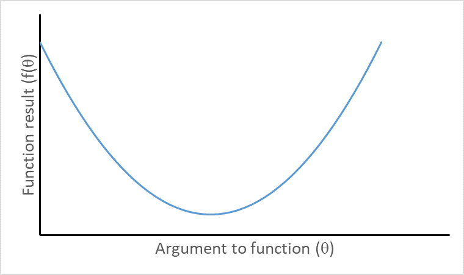

Software tools for Maximum Likelihood Estimation
Lesson 2 - first RTMB & Derivatives
1 December 2023
Outline:
- Demos of using nlminb and RTMB to estimate parameters
- Explanation of what happened in RTMB
- Simple exercise adapting RTMB example
- All that derivative stuff
- derivatives, partial derivatives, second derivatives, cross derivatives (aka mixed second derivatives), gradient vector and Hessian
- Methods to calculate/appoximate derivatives
- Exercise: finite difference derivatives
- How the Hessian and gradient vector are used
- RTMB Nonlinear regression vonb example
Demos of estimating the mean the hard way
Just using nlminb
Using RTMB
“Magic” when we used MakeADFun in RTMB
Converts your parameter list and NLL function into new inputs for nlminb (and lots of hidden stuff)
obj$par: your list of starting values as vector
obj$fn: function pointing to memory location where NLL function result is stored
obj$gr: function pointing to memory location where gradient stored
IMPORTANT! obj$fn and obj$gr use hidden copy (created by MakeADFun) of any variables used in your NLL function
Exercise - change model to assume gamma rather than normal (in breakout groups)
What is a derivative

\[ \frac{d f(\theta)}{d \theta}=\lim h \rightarrow 0 \frac{f(\theta+h)-f(\theta)}{h} \]
Partial derivative
Function with multiple arguments but we treat all but one of them as constants, and calculate derivative with respect to just one! E.g.,
\[ \frac{\partial f}{\partial \theta_{2}}=\lim h \rightarrow 0 \frac{f\left(\theta_{1}, \theta_{2}+h, \theta_{3}\right)-f\left(\theta_{1}, \theta_{2}, \theta_{3}\right)}{h} \]
Second derivative
Just a derivative of a derivative
\[ \frac{\partial^{2} f}{\partial \theta^{2}}=\frac{\partial \frac{\partial f}{\theta}}{\partial \theta} \]
Visualizing second derivatives

Concave function with negative second derivative
Visualizing second derivatives
Convex function with positive second derivative
Cross derivative (mixed second derivs)
\[ \frac{\partial^{2} f}{\partial \theta_{1} \partial \theta_{2}}=\frac{\partial \frac{\partial f}{\partial \theta_{1}}}{\partial \theta_{2}} \]
An important and convenient fact:
\[ \frac{\partial^{2} f}{\partial \theta_{1} \partial \theta_{2}}=\frac{\partial^{2} f}{\partial \theta_{2} \partial \theta_{1}} \]
Methods for calculating derivatives
Analytical derivatives. Gold standard but not available for many complex models.
Finite difference methods. Intuitive but slow and propogate errors.
Automatic differentiation. Fast and accurate but requires specialized software.
Finite difference derivatives
Widely used, e.g., default of nlminb and Excel solver
Forward difference
\[ \partial f / \partial \theta_{i}=\frac{f\left(\theta_{i}+h\right)-f\left(\theta_{i}\right)}{h} \]
h is semi-arbitrary but small relative to \(\theta_i\).
Central differences
\[ \partial f / \partial \theta_{i}=\frac{f\left(\theta_{i}+h/2\right)-f\left(\theta_{i}-h/2\right)}{h} \]
Exercise - finite difference derivatives
- For g(x) = a + b X + sin X, use finite difference methods to calculate the derivative of g(X) with respect to (wrt) X
- for x=1, with a=2 and b=0.5. (answer approximately 1.040)
- Repeat for x=2, a=1, and b=1. Answer approximately 0.5839.
- For a=2, b=0.5, x=1, and same function, use finite differences to find the second derivative wrt x (answer approximately -0.8415)
Automatic differentiation
Uses repeated applications of chain rule: \(\partial z / \partial \theta=[\partial z / \partial y][\partial y / \partial \theta]\)
Simplest case. \(y=f(\theta)\), \(z=g(y)\), i.e., \(z=g(f(\theta))\)
General case we care about:
\[ NLL=f_1(f_2(f_3(...f_k(\theta)...))) \]
Gradient
Just a fancy term to mean the vector of derivatives of the NLL function with respect to each parameters (so if k parameters, then k elements)
\[ g=\left\{\partial f / \partial \theta_{1}, \partial f / \partial \theta_{2}, \ldots \partial f / \partial \theta_{k}\right\}^{T} \]
Hessian - a square symmetric marix
\[ H=\left[\begin{array}{cccc}\partial^{2} f / \partial \theta_{1}^{2} & \partial^{2} f / \partial \theta_{1} \partial \theta_{2} & \ldots & \partial^{2} f / \partial \theta_{1} \partial \theta_{k} \\\partial^{2} f / \partial \theta_{2} \partial \theta_{1} & \partial^{2} f / \partial \theta_{2}^{2} & \ldots & \partial^{2} f / \partial \theta_{2} \partial \theta_{k} \\\ldots & \ldots & \ldots & \ldots \\\partial^{2} f / \partial \theta_{k} \partial \theta_{1} & \partial^{2} f / \partial \theta_{k} \partial \theta_{2} & \ldots & \partial^{2} f / \partial \theta_{k}^{2}\end{array}\right] \]
\[ h_{i,j}=h_{j,i}=\frac{\partial^{2} f}{\partial \theta_{i} \partial \theta_{j}}=\frac{\partial^{2} f}{\partial \theta_{j} \partial \theta_{i}} \]
If the NLL were a quadratic function as it would be for linear normal model…
\[ \theta_{\text {min }}=\theta_{\text {start }}+H^{-1} g \]
where \(H^{-1}\) in the matrix inverse of \(H\) and \(H^{-1}g\) is the product of the inverse of the Hessian and the gradient
Because our models generally not normal and linear, iterative searches…
specify starting values for parameters, \(\underline{\theta_0}\)
Replace \(\underline{\theta_0}\) by \(\underline{\theta_1}=\underline{\theta_0}+\delta_0\)
Check gradient and Hessian and if at a minimum stop otherwise…
Return to step 2 but each time \(\underline{\theta_{i+1}}=\underline{\theta_i}+\delta_i\)
Newton step: \(\underline{\delta}_{i}=H^{-1} \mathrm{\underline{g}}\) evaluated at current params
Quasi-Newton method uses \(\underline{\delta}_{i}=\lambda H^{-1} \mathrm{\underline{g}}\) with Hessian approximated using search path, and \(\lambda\) a number less than 1
Using the Hessian to calculate asymptotic standard errors
First some reminders
Parameter estimates are random variates that result from estimators (random variables)
The variance describes the variability of results from applying the estimation method, namely the expected squared deviation between an estimator and its expected value
What we report as a standard error for a parameter is the square-root of this variance.
The variance-covariance matrix
\[ \Sigma=\begin{array}{cccc}\sigma_{1}^{2} & \sigma_{1,2} & \ldots & \sigma_{1, k} \\\sigma_{2, 1} & \sigma_{2}^{2} & \ldots & \sigma_{2, k} \\\ldots & \ldots & \ldots & \ldots \\\sigma_{k, 1} & \sigma_{k, 2} & \ldots & \sigma_{k}^{2}\end{array} \]
The asymptotic variance-covariance matrix
\[ \hat{\Sigma}=H^{-1} \]
Square-root of diagonal gives standard errors
Off-diagonals are covariances
The Hessian needs to be positive definite for the calculation
If the Hessian is not positive definite its a problem!
Delta method used to obtain SEs for derived quantities (using \(\hat{\Sigma}\))
Musky vonB example

musky_vonb.dat
von Bertalanffy model
\[ \begin{array}{l}L_{i}=L_{\infty}\left(1-e^{-K\left(a_{i}-t_{0}\right)}\right)+\varepsilon_{i} \\\varepsilon_{i} \stackrel{i i d}{\sim} N\left(0, \sigma^{2}\right)\end{array} \]
\[ L_{i} \sim N\left(L_{a_{i}}, \sigma^{2}\right) \]
Influence of Linf

Influence of K

Musky vonB setup code
code for NLL for Musky vonb example
Create model object and print predicted lengths before fitting model
fit the model
outer mgc: 3572.344
outer mgc: 115.0372
outer mgc: 306.8376
outer mgc: 101.0471
outer mgc: 30.69436
outer mgc: 135.1418
outer mgc: 120.5931
outer mgc: 25.99566
outer mgc: 197.1401
outer mgc: 122.5854
outer mgc: 66.52428
outer mgc: 36.54847
outer mgc: 3.778352
outer mgc: 19.59957
outer mgc: 1.539833
outer mgc: 0.6958294
outer mgc: 0.239123
outer mgc: 0.1362159
outer mgc: 0.02895874
outer mgc: 0.001790128
outer mgc: 0.0001970265 Get parameter uncertainties and convergence diagnostics
outer mgc: 0.0001970265
outer mgc: 19.77567
outer mgc: 19.71682
outer mgc: 9.178336
outer mgc: 9.171702
outer mgc: 2.35869
outer mgc: 2.358392
outer mgc: 0.1198859
outer mgc: 0.1201142 sdreport(.) result
Estimate Std. Error
log_linf 7.1488714 0.04083255
log_vbk -1.2456407 0.16950408
t0 -0.7710237 0.35092437
log_sd 3.8876390 0.09128707
Maximum gradient component: 0.0001970265 Predicted lengths at age after model fitting
vonB Exercises
Change REPORT(atage_pred) to ADREPORT(atage_pred) and look at sdreport and summary of the sdreport
Calculate a new variable equal to vbk*linf as ADREPORT
Change the model so data are assumed gamma distributed (with expected value given by vonB equation and constant variance)